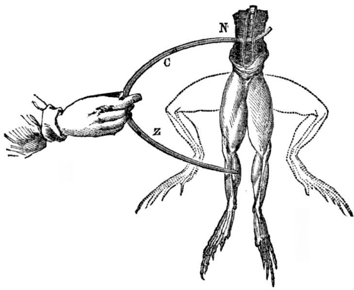
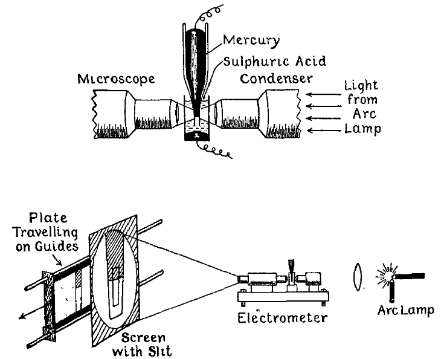
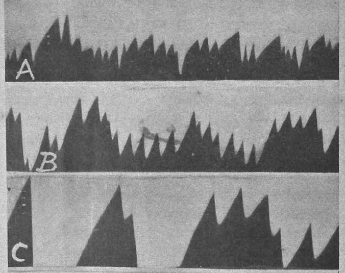
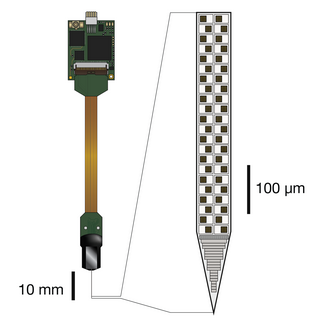
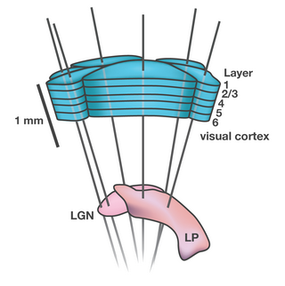
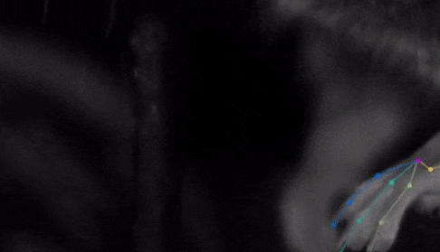
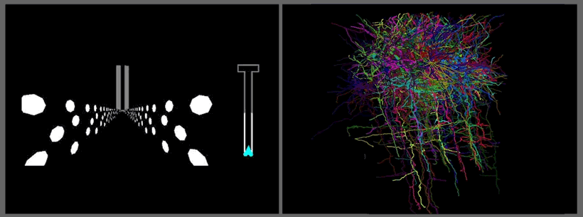
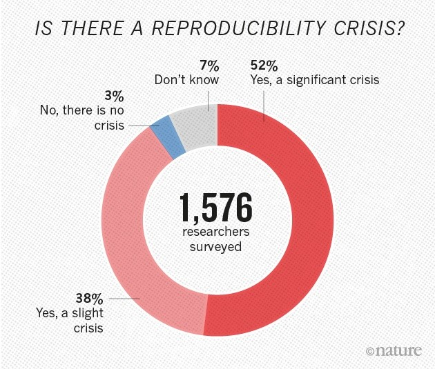
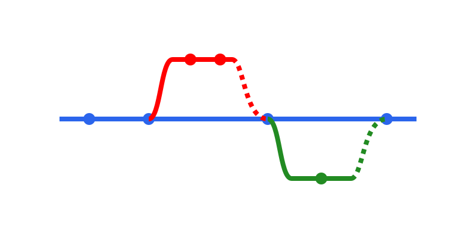

Zwischen Lab und Laptop
Technische Herausforderungen der modernen Neurowissenschaft
Beginn der Modernen Neurowissenschaft


Die Entdeckung des Neurons


Erste Messung eines Neurons


Neurowissenschaft im Zeitalter von Big Data


Quantifizierung von Verhalten


Moore's Gesetz

Von einzelnen Zellen zu Neuronalen Populationen

Reproduzierbarkeitskrise der Wissenschaften

- Reproduzierbarkeit
- Neurowiss.: 15% [1]
- Biomedizin: 6% [2]
- Ökonomie: 37% [3]
- Ursachen
- Datenverfügbarkeit
- Softwareversionen
- Dokumentation
[1] Xiong & Cribben, 2022; [2] Herbert et al., 2021; [3] Samuel & Mietchen, 2024
Research Software Engineering (RSE)
Von Software Entwicklern Lernen
- Ca. 50 Millionen Zeilen code
- Uber 2000 Entwickler
- Weltweite zusammenarbeit
Versionskontrolle:

Zeichen des Fortschritts
- Offen Zugängliche Datenarchieve
- Standardisierte Mess- und Analyseverfahren
-
Wachsende Zahl an
Research Software Engineers